Responsáveis por marcar diferentes gerações, desde que começaram a ser passados pela primeira vez na TV Tupi em 1950, os desenhos animados são até hoje um verdadeiro sucesso, tendo cada um deles personagens que se eternizaram na história. Para relembrar os desenhos mais antigos, como Caverna do Dragão, e curtir com você os mais novos, como o “O Incrível Mundo de Gumball”, listamos os 21 desenhos animados mais icônicos de todos os tempos.
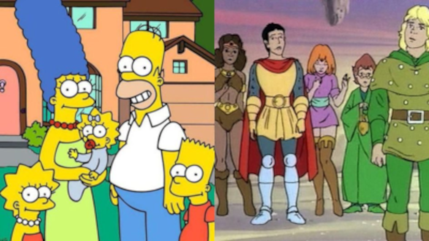
Confira os primeiros 10 melhores desenhos animados
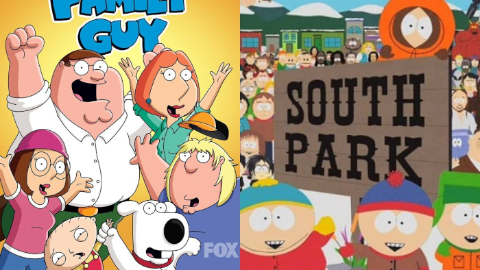
1 – O Incrível Mundo de Gumball
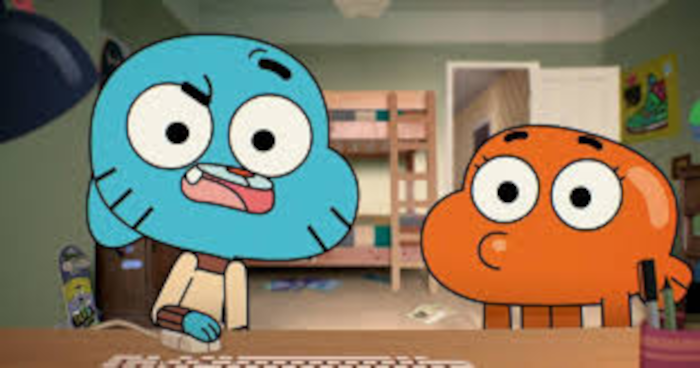
Exibida no Cartoon Network a partir de 2011, essa série de desenho animado britânico-americana teve seis temporadas e conta a história das aventuras de Gumball, um gato azul de cabeça gigante, e seu melhor amigo Darwin, um peixinho dourado irmão que criou pernas, que se veem envolvidos em diferentes confusões na cidade fictícia de Elmore, nos Estados Unidos, onde interagem com sua Irmã, Anais, seus pais Nicole e Richard, e outros personagens secundários.
2 – Os Simpsons
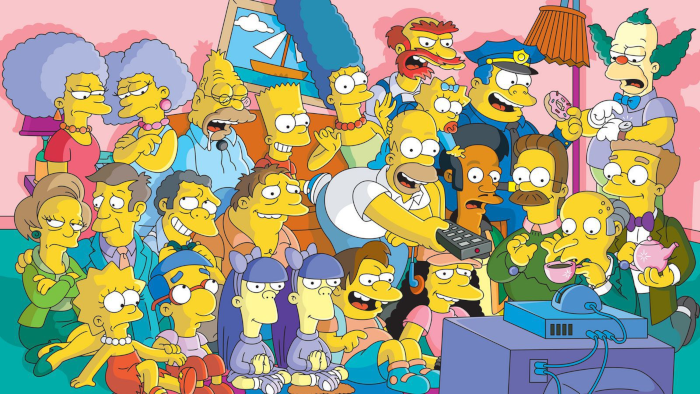
Você certamente já deve ter visto um dos episódios da família formada por Homer, Marge, Bart, Lisa e Maggie. Famosa por satirizar o estilo de vida americano e diferentes aspectos da vida humana, "Os Simpsons" é a série de animação e sitcom norte-americana mais longa da história da televisão, com 30 temporadas.
3 – Family Guy
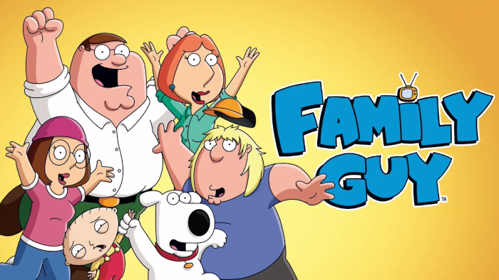
Conhecida no Brasil como “Uma Família da Pesada”, essa é outra sitcom de animação norte-americana de sucesso, que soube como poucas satirizar o modo de vida e a hipocresia da classe média americana, através da família Griffin, formada pelo Pais Peter e Louis, os filhos Meg, Chris, Stewie e o cachorro Brian, que fala, e outros personagens “estereotipados”.
4 – South Park
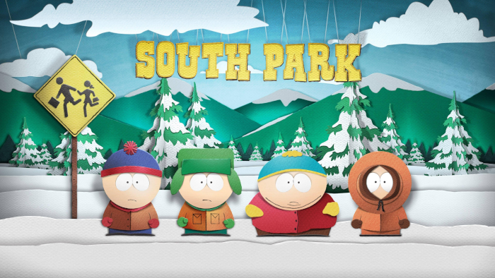
Criada para o canal Comedy Central, “South Pak” é uma sitcom americana destinada ao público adulto, mas vista por pessoas das mais variadas idades. Conhecido por ter um humor satírico, surreal e por vezes cruel, esse desenho mostra uma narrativa centrada nas aventuras bizarras de 4 crianças – Stan Marsh, Kyle Broflovski, Eric Cartman, e Kenny McCormick- na cidade que dá o título ao desenho
5 – Scooby-Doo
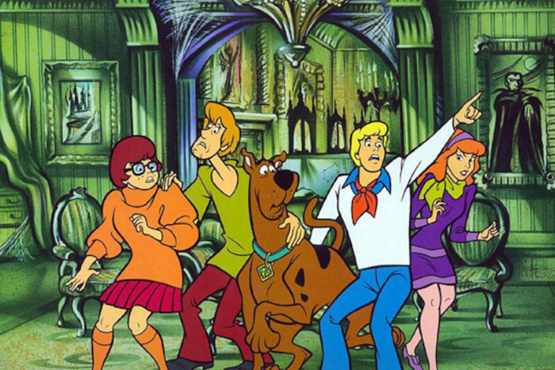
O mascote Scooby-Doo e o grupo de detetives, que incluia Fred, Velma, Daphne e Salsicha, ficaram famosos por viajar o mundo com a sua van, a “Mystery Machine”, solucionando os mais diferentes mistérios. Exibido desde 1969, esse é o segundo desenho norte-americano com mais temporadas, atrás apenas de “Os Simpsons”.
6 – Caverna do Dragão
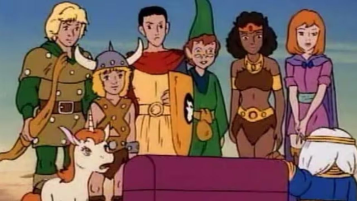
"Caverna do Dragão" foi um dos desenhos mais famosos na década de 80. Inspirado e baseado em um jogo de RPG, ele acompanhava a trama de um grupo de 6 amigos transportados para um universo paralelo, o Reino Titular, e que tentavam, a todo o momento, encontrar o caminho de casa, auxiliados por um guia: o Mestre dos Magos. A estreia desse desenho no Brasil foi em 1986, no programa Xou da Xuxa da Rede Globo.
7 – Os Flinstones
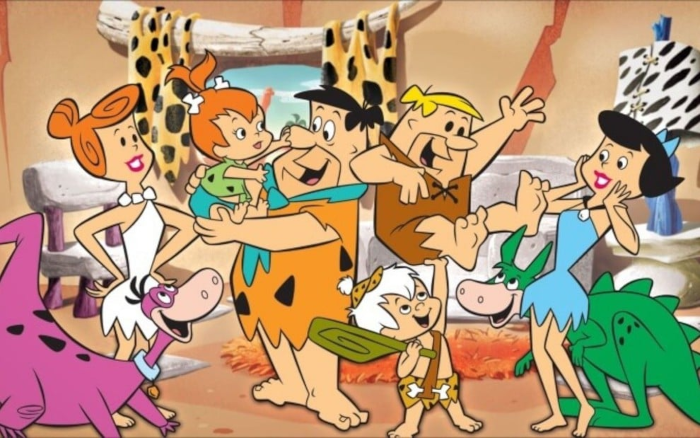
Se a Hanna Barbera Productions se transformou em um dos maiores estúdios Hollywoodianos, foi graças a “Os Flinstones”! Essa série de animação já vista por quase 300 milhões de espectadores em 80 países, conta sobre a vida de uma família que vivia na cidade de Bedrock, na Idade da Pedra, seu dinossauro de estimação, o Dino, e seus vizinhos, a família Rubble. Lançado em 1960, ele foi o primeiro desenho a ser exibido no horário nobre dos EUA.
8 – He-Man e os Defensores do Universo
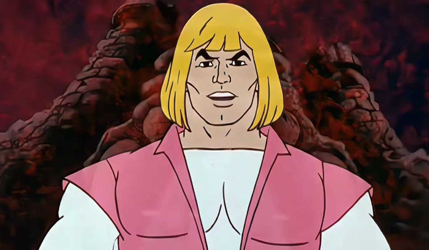
Tema de diversos memes feitos por brasileiros, o desenho “He-Man e os Defensores do Universo” contava a saga de He-man, o homem mais poderoso universo, que lutava com seus aliados, para defender o planeta Eternia e o Castelo de Grayskull , contra o vilão Esqueleto. Lançado em 1983, esse desenho foi criado em função de uma linha de brinquedos da Mattel.
9 – Corrida Maluca
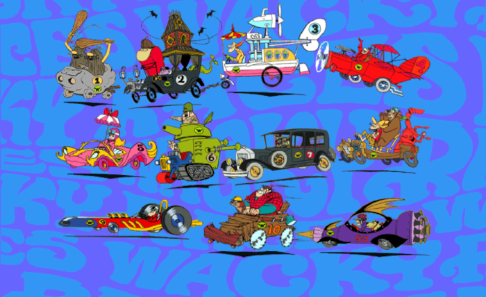
Este foi mais um desenho produzido pela Hanna-Barbera e que marcou a vida de diferentes gerações. Produzida entre 1968 e 1969, a “Corrida Maluca” consiste em 10 pilotos bem inusitados competindo pelo título de “Corredor Mais Louco do Mundo”. Entre os pilotos se destaca Dick Vigarista e seu cachorro Mutley, que a cada episódio inventam diferentes formas de sabotar seus adversários para ganhar as corridas.
10 - Os Thundercats
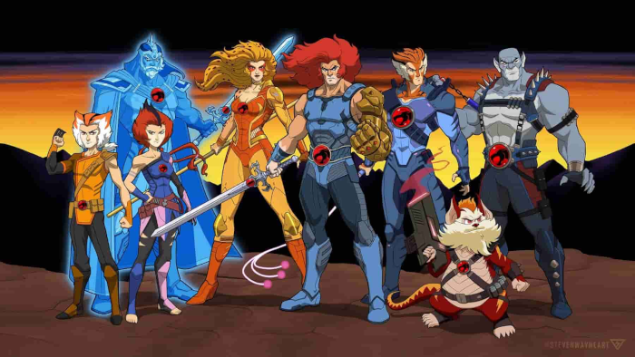
Os “Thundercats” estrearam para o público brasileiro em 1986, pela Rede Globo, Com 4 temporadas, esse desenho mostrava as aventuras de uma trupe de humanoides felinos vindos do planeta Thundera, que eram chamados de Thundercats. Após terem seu planeta destruído, o grupo teve que fugir para outro planeta, onde tiveram que enfrentar o vilão Mumm-Ra.